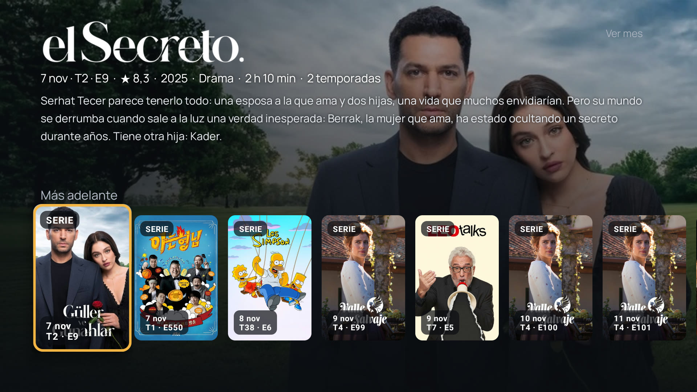
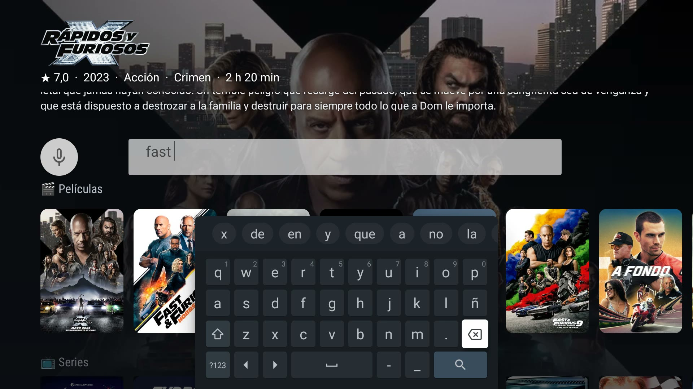

Features
Everything WatchBridge TV does
It started as a fix for Google TV recommendations and grew into the front door of your TV. Here is all of it, in one place.
01Recommendations
Open the right title in the right app
- Where it opens
- Nuvio, Stremio, WuPlay, Plex (free catalog), Jellyfin, Wholphin or Emby — not the app that recommends it.
- How it finds the title
- Titles are matched on TMDB. Remakes and same-named sequels are told apart. With two exact matches it asks once, remembers your pick, and skips the question when one is clearly the popular one.
- One player or two
- One app for everything, or a different one for movies and for series. For Nuvio, an option to play directly.
- Your own server first
- “Check my Jellyfin / Emby first” opens the title there if it is in your library.
- Confirm before opening
- An optional “Watch now” button, so a stray click never redirects you.
- Voice search
- Ask Google for a title (“Open Joker”): Google shows its page and the title opens in your player.
- YouTube
- YouTube recommendations can open in SmartTube or TizenTube Cobalt.
- What you are watching
- With Nuvio, Stremio and WuPlay it notices what is playing, even if you did not open it from WatchBridge, to feed Continue watching and clear finished titles from My list. Optional and experimental.
- Launchers
- It works alongside your launcher. On Projectivy and Monet it also adds its own rows and opens other apps’ cards in your player.
- Fire TV
- A mode of its own, with no root, because Fire OS blocks accessibility for sideloaded apps.
Projectivy and Monet Fire TV mode Compare the players
"Dune" — two exact matches
Recommended again later — opens the 2021 pick directly, no question shown
02Home screen
A home of its own
- Recommended for you
- Built from TMDB using what you watch, by type and genre, and synced with your phone.
- Your lists
- Continue watching, My list and History, the same on the TV and on the phone.
- Calendar
- Next episodes and premieres of what you follow, day by day.
- Search and Surprise me
- Search by typing or by voice, and a button that picks a movie when you cannot decide.



03Live TV
A TV guide for your own IPTV list
- Your list
- M3U/M3U8, Xtream Codes or an .m3u file sent from your phone or PC. Several lists, each with its own favorites and locks. No channels or lists are sold.
- Guide
- EPG grid with now and next, catch-up up to 48 hours if your provider keeps an archive, favorites and groups.
- Watching
- Two-channel Multiview, audio-track selection, last-channel jump and a parental PIN.
- Sports
- Events from your guide with live scores and match minute; in football, goals and cards with alerts.
- Recording and alerts
- Record a channel or program to USB or TV storage, and get an alert when a marked program starts.
- Movies and series
- Hold OK on a movie in the guide to open it in your player, see the best-rated movies on your channels tonight, and, with Xtream, browse on-demand Movies and Series.
Everything in the IPTV guide Compare with TiviMate and others
04Phone
WatchBridge Mobile
- Same account
- History, My list and recommendations shared with your TV, with a detail page for every title and a choice of the app that opens it.
- Send to TV
- Send a movie, series or live channel to the TV with one tap, or ask the TV to record a channel for 30 minutes to 3 hours.
- Bring your history
- Import your history and My list from Trakt, so a new purchase does not mean starting over. Share a title from other apps to open it in your player.
- IPTV on the go
- Scrolling TV guide, live sports scores, Multiview with up to three channels, premiere notifications for what you follow.
05Options
More switches worth knowing about
Check my Jellyfin first
Already on your own server? Opens straight there instead of your usual player — no search needed.
Watch now confirm
Optional confirm button before opening, so a stray click never redirects you by accident.
YouTube redirect
Sends YouTube recommendations to SmartTube or TizenTube Cobalt instead — independent of your movie/show player.
Manage devices
One license, up to 5 TVs. See every linked device and unlink any of them, anytime.
Content type rules
Optional, off by default: pick a different app for movies than for series, instead of one app for everything.
Detects what's playing
Works with Nuvio, Stremio, and WuPlay: recognizes what you're watching even if you didn't open it through the app, feeding Continue watching and clearing titles off My list automatically. Optional, experimental.
Referral program
Invite a friend from Settings → Subscription — you get +4 trial days once they actually use the app, +15 more if they buy Lifetime, and Lifetime free after 10 friends who buy.